1Rice University · 2Johns Hopkins University · 3Northeastern University
Existing visual grounding benchmarks primarily evaluate alignment between image regions and literal referring expressions, where models can often succeed by matching a prominent named category. We explore a complementary and more challenging setting of scenario-based visual grounding, where the target must be inferred from roles, intentions, and relational context rather than explicit naming. We introduce Referring Scenario Comprehension (RSC), a benchmark designed for this setting. The queries in this benchmark are paragraph-length texts that describe object roles, user goals, and contextual cues that include deliberate references to distractor objects that often require deep understanding to resolve. Each instance is annotated with interpretable difficulty tags for uniqueness, clutter, size, overlap, and position which expose distinct failure modes and support fine-grained analysis. RSC contains approximately 31k training examples, 4k in-domain test examples, and a 3k out-of-distribution split with unseen object categories. We further propose ScenGround, a curriculum reasoning method serving as a reference point for this setting, combining supervised warm-starting with difficulty-aware reinforcement learning. Experiments show that scenario-based queries expose systematic failures in current models that standard benchmarks do not reveal, and that curriculum training improves performance on challenging slices and transfers to standard benchmarks.
RSC Benchmark
RSC replaces referring phrases with scenario-based queries that describe a user role, goal, and at least three disambiguating cues, and deliberately mentions competing objects to require deep understanding. Each instance is annotated with reasoning traces and five interpretable difficulty tags (Uniqueness, Clutter, Size, Overlap, and Position), which expose distinct failure modes and support fine-grained curriculum design and evaluation.
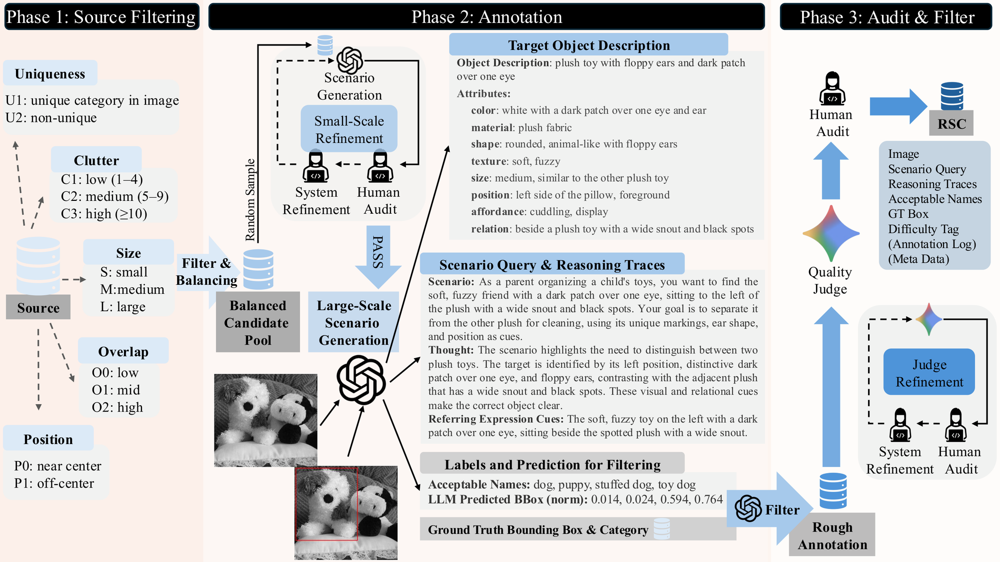
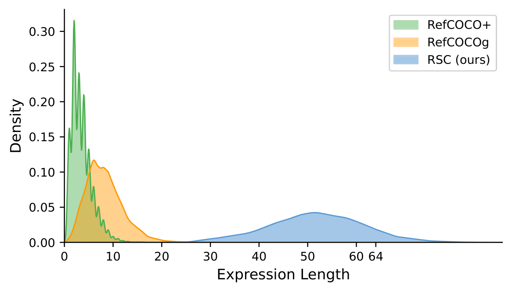
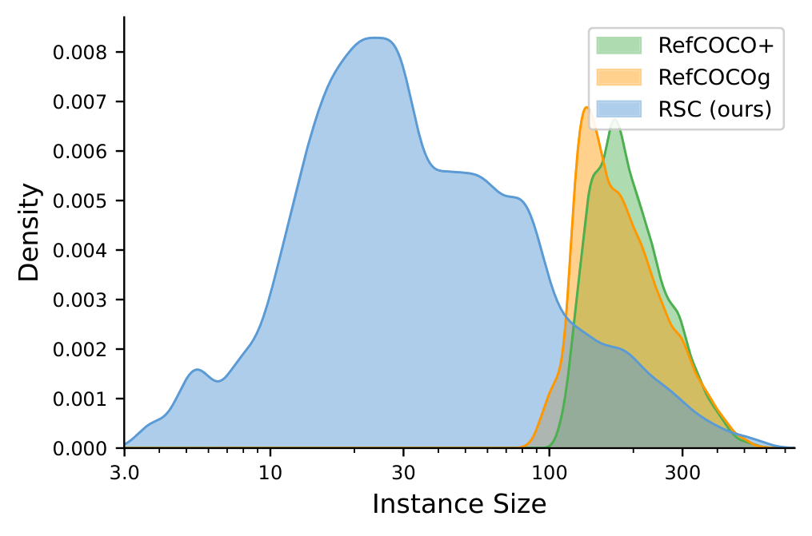
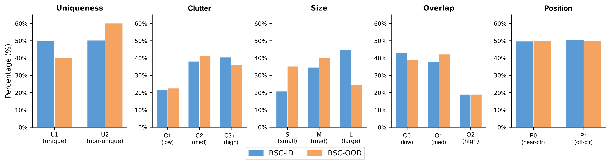
ScenGround
ScenGround is a two-stage curriculum reasoning method for scenario-based visual grounding. In Stage 1, Thought-Primed SFT (TP-SFT) aligns the model to the output schema and elicits faithful reasoning traces before a structured answer, using the easier RSC slices to stabilize interface learning. In Stage 2, Incentive-Curriculum GRPO (IC-GRPO) refines localization and disambiguation via shaped rewards coupling geometry (smooth IoU, center-consistency, out-of-bounds penalties) and alias-aware category rewards. The training follows a tag-aware curriculum, feeding more difficult non-unique, cluttered, overlapping, and off-center targets in the later stage. A prompt-template ensemble (PTE-8) further improves robustness across query surface forms.
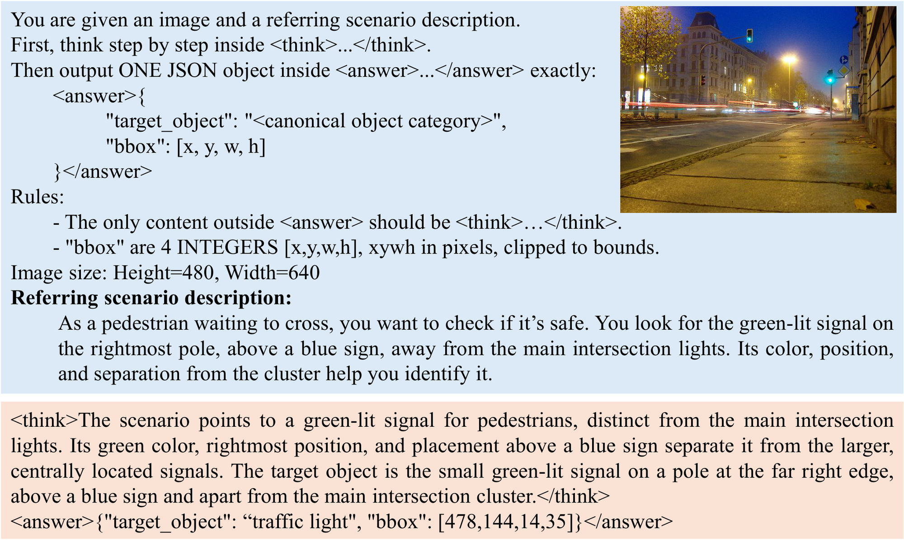
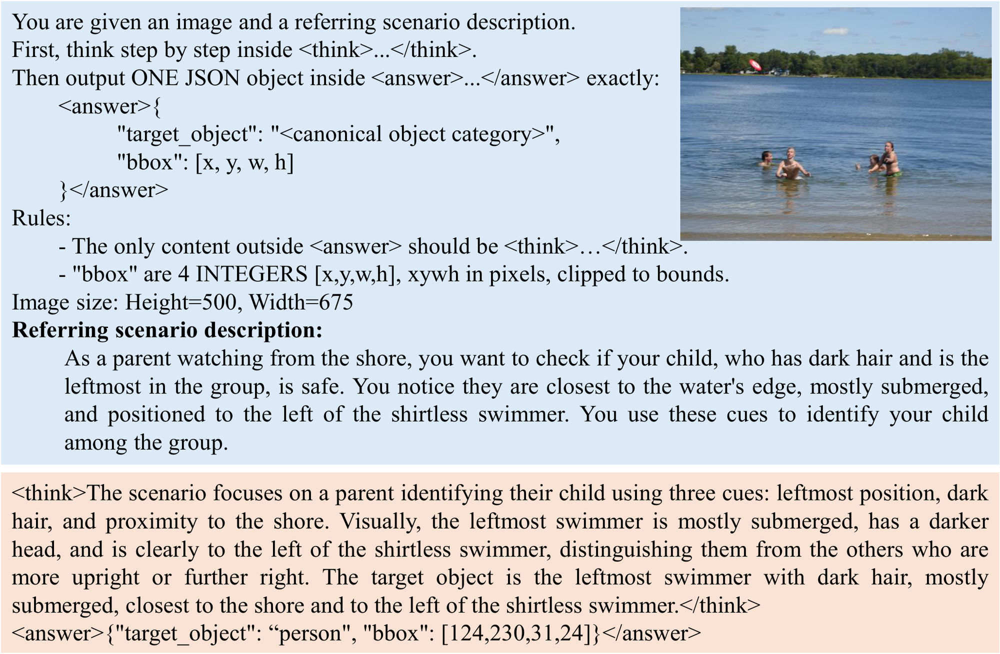
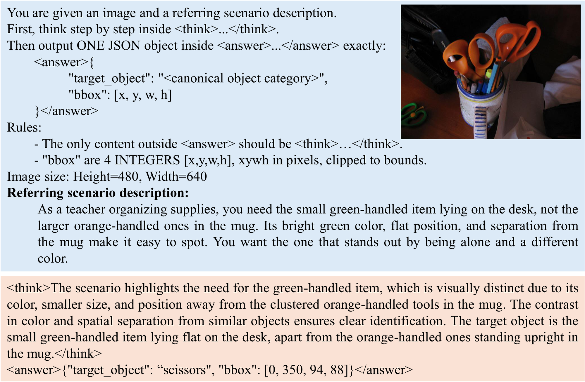
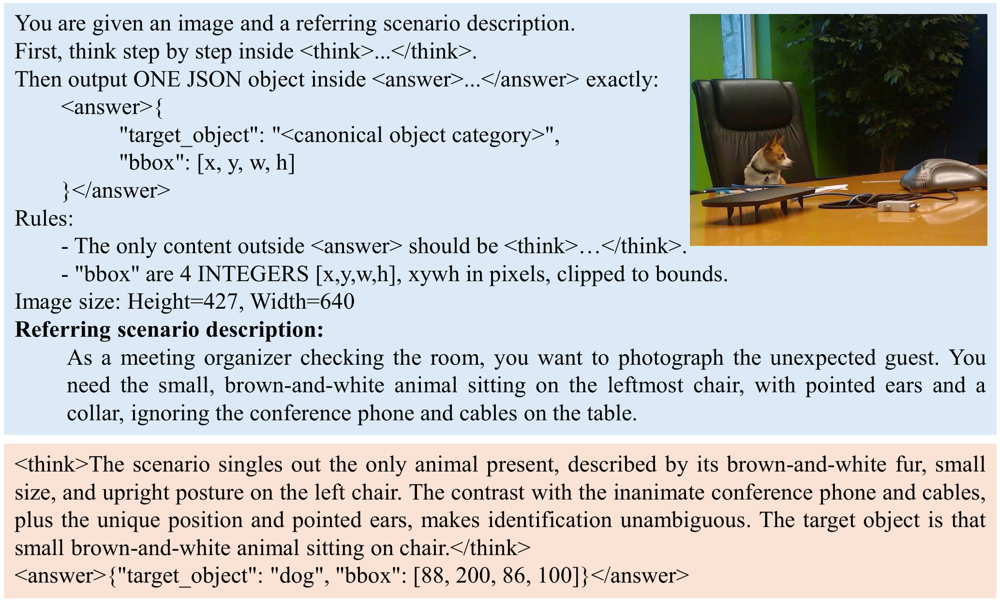
target_object and bbox [x,y,w,h]. Scenarios avoid category names and force disambiguation. IC-GRPO uses 8 prompt templates (PTE-8) for robustness.Experiments
Results reveal a consistent pattern: models with strong category accuracy tend to lag on localization, while strong detectors lack semantic reasoning. ScenGround substantially outperforms all baselines on ID mIoU and consistently reduces the localization–semantics trade-off across ID and OOD splits.
| Model | RSC In-Domain | RSC Out-of-Domain | ||||||
|---|---|---|---|---|---|---|---|---|
| mIoU | Acc@0.5 | Acc@0.7 | Cat Acc | mIoU | Acc@0.5 | Acc@0.7 | Cat Acc | |
| Closed-source LLMs | ||||||||
| GPT-4o | 19.41 | 13.23 | 5.37 | 79.45 | 16.57 | 9.55 | 3.08 | 62.00 |
| Claude 3.7 | 16.64 | 8.32 | 3.71 | 89.67 | 12.04 | 5.54 | 1.87 | 58.98 |
| Specialist Grounding Models (oracle settings ‡) | ||||||||
| Grounding DINO (cat token) ‡ | 44.60 | 47.55 | 42.03 | — | 32.18 | 31.99 | 27.89 | — |
| Grounding DINO (ref. cue) ‡ | 48.99 | 51.84 | 46.02 | — | 38.12 | 38.26 | 34.07 | — |
| Open-source VLMs | ||||||||
| InternVL2.5 8B | 16.76 | 11.88 | 6.74 | 81.70 | 8.08 | 3.64 | 1.61 | 36.50 |
| Qwen3-VL 8B | 15.46 | 11.17 | 6.05 | 75.04 | 7.38 | 3.70 | 1.48 | 46.97 |
| Qwen2.5-VL 7B | 30.31 | 27.42 | 15.66 | 30.86 | 21.54 | 15.88 | 9.19 | 20.82 |
| ScenGround (Ours) | 55.68 | 60.90 | 42.32 | 94.23 | 38.37 | 38.11 | 22.64 | 21.13 |
‡ Oracle settings: Grounding DINO receives privileged inputs (gold category name or short ref. cue) unavailable at inference.
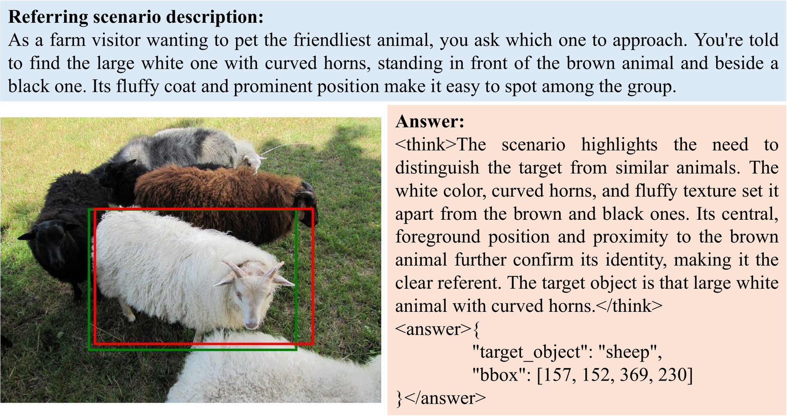
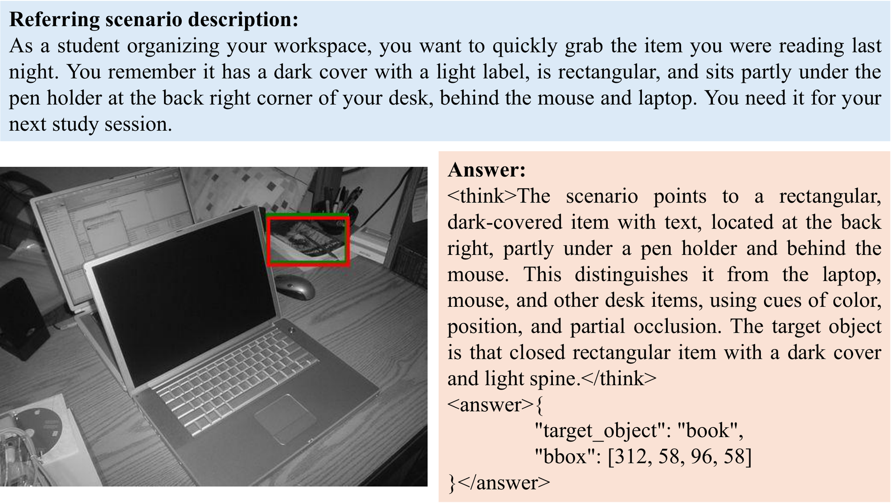
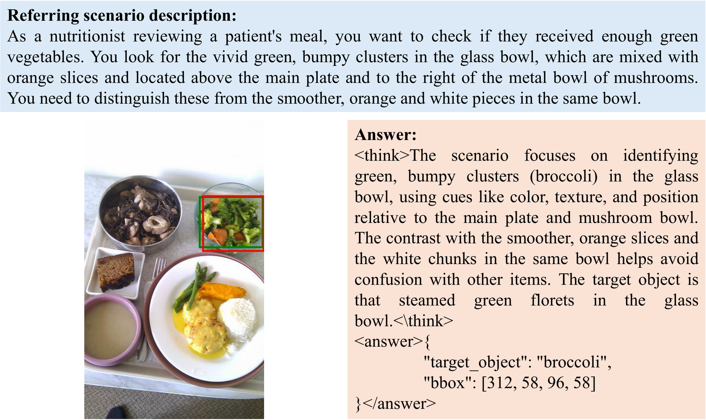
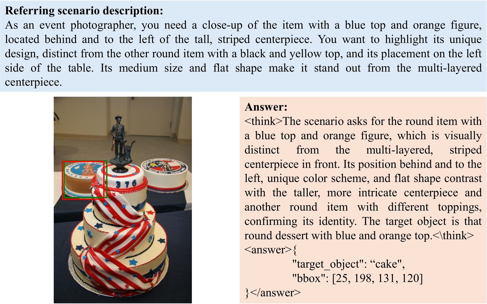
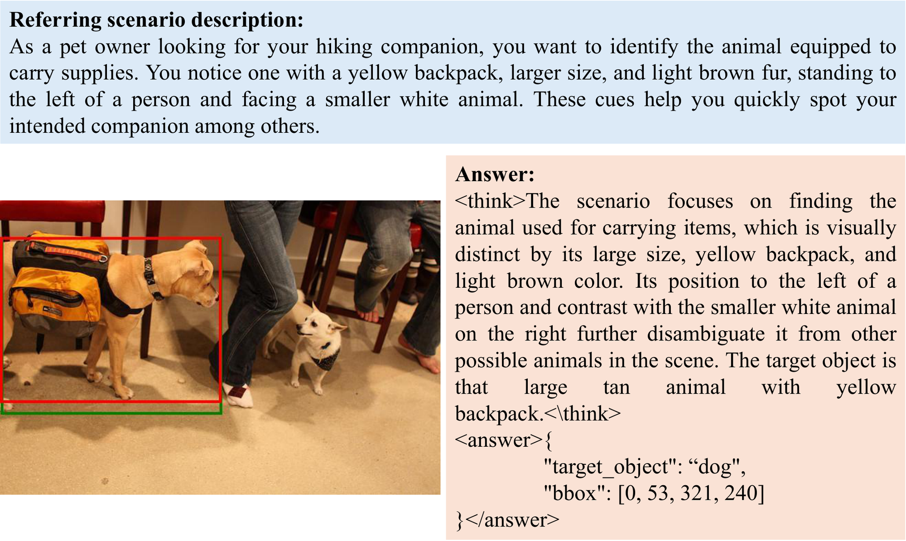
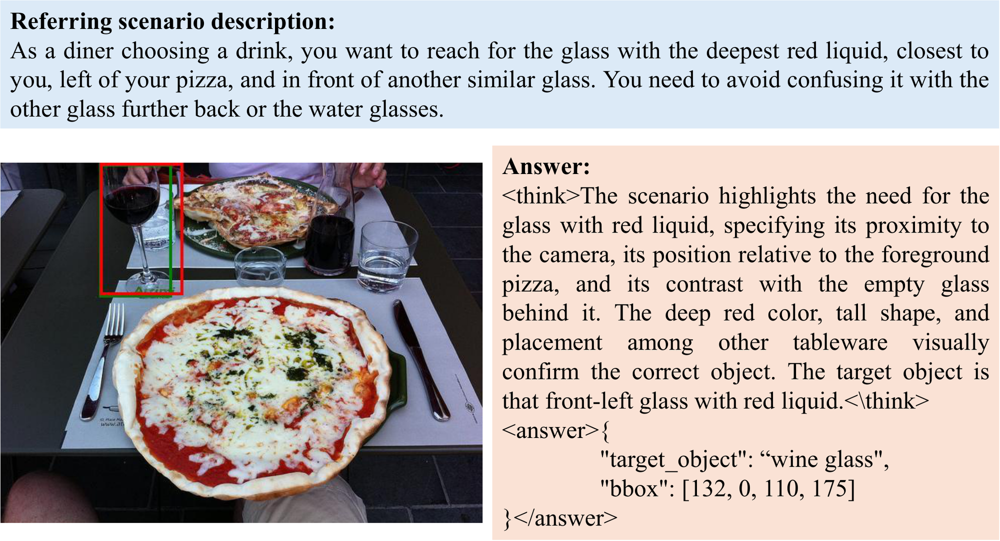
Citation